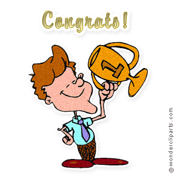

International
InternationalRozstrzygnięcie konkursu - Spleen przedwakacyjny
2012-06-13 | autor: flamenco108No właśnie. Dopadł mnie chyba przedwakacyjny spleen. Albo może pękła mi jakaś gumka w mózgu? W końcu ponad pół roku spędziłem tracąc czas wolny na skanerach różnorakich, nie chcąc stracić osobliwej okazji skopiowania najbardziej interesujących egzemplarzy książek z pewnego ściśle tajnego archiwum… Można dostać obrzydzenia nawet wobec własnego hobby? Można. Teraz mam ogromną ochotę odpocząć odrobinę od stenografii. Pożeglować po Mazurach, powędrować po górach i inne takie.
A poza tym mała przerwa w pracy nad własnym systemem SteMi również mi się przyda. Niech mózg przepracuje sprawy, które od dawna uważałem za nie do rozwiązania. A przecież nie ma takich zagadek, oprócz tych umyślnie w ten sposób ułożonych. Fachowcy od mózgu twierdzą, że często dochodzi do niespodziewanych olśnień, jak się własnemu mózgu (szanowni, ja dobrze wiem, że celownik od mózg brzmi mózgowi, ale lubię skróty, to taka stenografia jest ;-)) da spokój, relaks i pozwoli pomielić dane w podświadomości. Takie przetwarzanie w tle.
Ale zanim udam się na zasłużony urlop, pragnę zrobić dwie rzeczy:
a) ogłosić wyniki ostatniego konkursu b) wręczyć nagrodę zwycięzcy
Rozstrzygnięcie konkursu

Konkurs ogłoszony miesiąc temu, tj. 15 maja 2012 roku uważam za rozstrzygnięty!
Wręczenie nagrody zwycięzcy
Zwycięzcą, wyłonionym spośród rzeszy uczestników został Czytelnik Przedstawiający Się Nickiem Bonsai. Brawo! Ponieważ nie mam na niego żadnych namiarów, proszę o kontakt w celu odebrania nagrody, którą jest…
“Dzieje stenografii” autorstwa Szymona Tauba i Stefanii Bobrowskiej, część I, czyli opracowanie historyczne. Dzieło monumentalne, opisujące w skrócie historię stenografii na świecie oraz dość dokładnie jej polskie perypetie aż do lat 30-tych XX wieku.
Zwycięzcę proszę o kontakt.
2012-06-13 autor: flamenco108